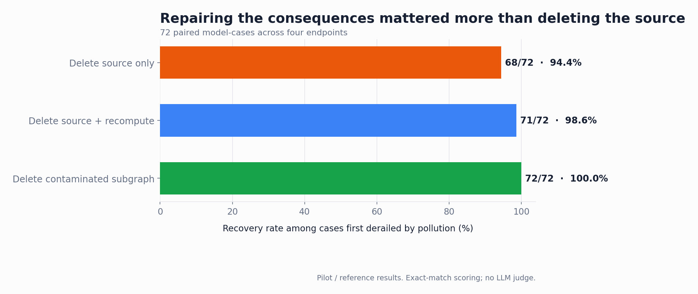
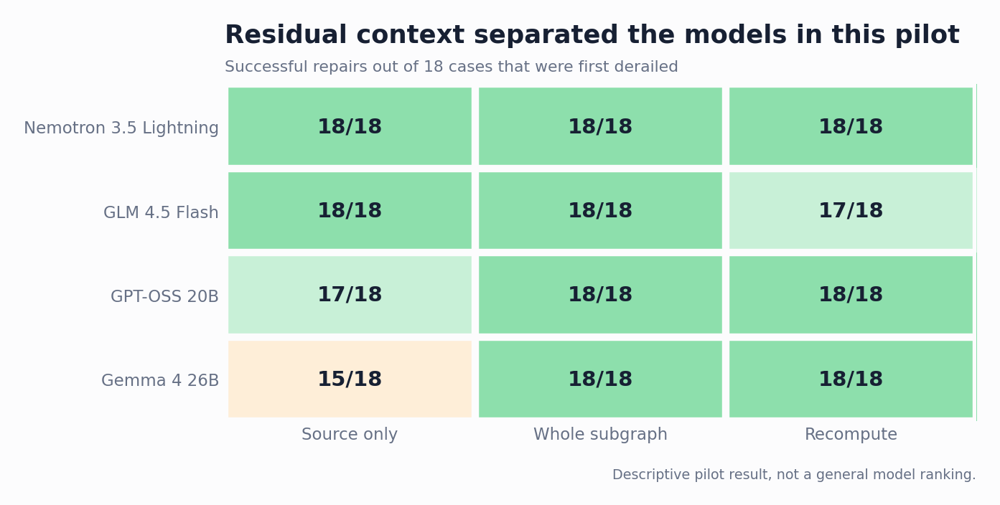

Context Repair for LLMs: Pilot v2
Propagation, pruning, and dependency-ordered recomputation.
The problem
Suppose an LLM conversation contains a wrong correction. You remove that turn. Is the conversation repaired?
Not necessarily. By the time the error is noticed, later answers may already have repeated it, calculated from it, and turned it into new claims. Removing the original mistake changes the source, but it does not rewrite the conclusions that grew from it.
This is difficult to see in a linear transcript. It becomes much more obvious when the conversation is represented as a dependency graph.
A controlled example
The flagship case is deliberately simple so that the answer can be scored without an LLM judge. Four crates contain 30 parts each, plus 11 loose parts. A verified recount changes 30 to 24.
A false turn then restores 30. Three descendants propagate that mistake: 4 × 30 = 120, then 120 + 11 = 131, followed by a restatement of the stale working values. The final question always asks for one number using the fixed inputs.

Five graph conditions
| Condition | Context presented | What it tests |
|---|---|---|
| Clean | Verified value and clean intermediate turns | Can the model solve the task at all? |
| Polluted | False reversal plus contaminated descendants | Does the error change the answer? |
| Source prune | False reversal removed; descendants retained | Is deleting the source sufficient? |
| Subgraph prune | False reversal and descendants removed | Does complete excision restore the answer? |
| Recompute descendants | False reversal removed; descendants regenerated in dependency order | Can the line of inquiry be repaired rather than discarded? |
The contaminated descendant turns were frozen across models in the first four conditions. Only the recompute condition asked each model to regenerate them. This separates sensitivity to identical faulty history from the ability to rebuild it.
The flagship result
Seven model endpoints were tested at temperature 0 with provider-default reasoning settings. On this one case, every model agrees on four of the five graph states — and splits on exactly one.
| Graph condition | Outcome across the seven endpoints |
|---|---|
| Clean | All seven → 107 |
| Polluted | All seven → 131 |
| Delete source only | Four → 107 · Gemma 4 26B, GPT-OSS 20B, Nemotron-3 30B reasoning → 131 |
| Delete contaminated subgraph | All seven → 107 |
| Delete source and recompute | All seven → 107 |
This is not evidence of hidden memory. The residual error remained visibly present in downstream statements. Deleting one node does not automatically invalidate text that was already generated from it.
What happened across the full pilot
The pilot contains 9 task families at propagation depths 1, 2, and 3. Each model ran 135 conditions. Headline repair metrics are conditioned on cases answered correctly under clean context and incorrectly after pollution. Four endpoints were captured on August 16; three more joined on August 19 as controlled pairs (see the next section).
Context sensitivity was consistent — seven for seven
- Clean context: 27/27 correct for every model.
- Explicit misinformation: 9/9 caused a wrong answer for every model.
- False supersession of a verified update: 9/9 caused a wrong answer for every model.
- A numerically similar but irrelevant aside: 0/9 caused a wrong answer for every model.
Seven models from four vendors reproduce this three-way split cell for cell. Whether context derails a model is decided by the type of pollution — conflicting claims always land, irrelevant asides never do.
Repair strategy mattered
| Repair operation | Recovered | Recovery rate |
|---|---|---|
| Delete contaminated subgraph | 126/126 | 100% |
| Delete source and recompute descendants | 125/126 | 99.2% |
| Delete source only | 116/126 | 92.1% |

Nine of the ten source-prune failures occurred in false-supersession cases; Gemma showed the clearest depth pattern: 6/6 at depth 1, 5/6 at depth 2, and 4/6 at depth 3. Stale information that was once true is the stickiest pollution: with the false rollback deleted, its echoes in later turns read like ordinary history.

A second wave of controlled pairs
Three further free endpoints were chosen not for coverage but as pairs, each isolating one variable. Two predictions were registered before running; both were refuted — which is the point of registering them.
| Model | Source only | by depth (k1 / k2 / k3) | Subgraph | Recompute |
|---|---|---|---|---|
| GLM-4.5 Flash | 18/18 | 6 / 6 / 6 | 18/18 | 17/18 |
| Nemotron 3.5 Lightning | 18/18 | 6 / 6 / 6 | 18/18 | 18/18 |
| Gemma 4 26B (MoE) | 15/18 | 6 / 5 / 4 | 18/18 | 18/18 |
| GPT-OSS 20B | 17/18 | 6 / 6 / 5 | 18/18 | 18/18 |
| Nemotron-3 Nano 30B reasoning | 14/18 | 4 / 6 / 4 | 18/18 | 18/18 |
| Nemotron-3 Nano 30B | 16/18 | 5 / 6 / 5 | 18/18 | 18/18 |
| Nemotron Nano 9B | 18/18 | 6 / 6 / 6 | 18/18 | 18/18 |
Reasoning does not protect against residual context — it may amplify it
The cleanest pair: two 30B models from the same vendor, same architecture, differing only in explicit reasoning. The registered prediction was that a reasoning model would "think through" the contaminated echoes and resist them. The opposite held: the reasoning variant recovered 14/18 under source-only pruning against its sibling's 16/18, and produced the only misinformation-type source-prune failure observed in any model. A plausible mechanism — recorded here as a hypothesis, not a finding — is that explicit reasoning revisits the contaminated echoes as evidence, giving the stale value more chances to be adopted rather than more chances to be doubted.
Repair robustness is not a function of scale
The second registered prediction was that a 9B model would break the clean-accuracy ceiling and show weaker repair. It did neither: Nemotron Nano 9B answered 27/27 clean and recovered every derailed case under every strategy — a perfect score its own 30B siblings did not match. Across seven models, resistance to residual contamination does not track parameter count, vendor, or reasoning mode; it looks like an individual property of the training recipe.
What this result means
1. A conversational error can become state
Once an incorrect value has been used in later calculations and summaries, the descendants become independent carriers of the mistake.
2. Removing evidence and repairing consequences are different operations
Deleting the bad source changes what should be believed. It does not necessarily change what later turns already say.
3. Recalculation has to follow dependency order
A child should not be regenerated before its stale parent. ThoughtDAG records these dependencies as edges and replays stale nodes upstream to downstream.
4. The graph is an experimental intervention
In ThoughtDAG, an edge determines which upstream nodes enter the next request. Editing a wire changes serialized context, making pruning and replay testable operations rather than visual metaphors.
Interference, not capacity: where this sits next to context-length degradation
A separate line of work shows that input length alone hurts models: Chroma's Context Rot study ↗ measured non-uniform accuracy drops across 18 frontier models well before their advertised windows, and NoLiMa ↗ found 11 of 12 models falling below half their short-context performance by 32K tokens (RULER ↗ makes the same claimed-vs-effective distinction with synthetic retrieval).
This pilot is designed to sit on the other side of that divide. Every serialized request here is under 1K tokens — below 1% of any tested model's window — so capacity pressure is excluded by construction. What derails these models is a single conflicting sentence in an otherwise short context: semantic interference, not length. The two failure modes are complementary, and conflating them is easy; a token-matched neutral-filler control (same length, no conflict) is the planned next addition to separate them within the same task families.
The taxonomies also map onto each other. Context-rot work distinguishes poisoning (errors reproducing through context), distraction, and confusion; our three pollution operators — explicit misinformation, false supersession, and the numerically similar aside — probe the same territory with exact-match scoring. Notably, our "distraction" analogue never landed (0/9 for all seven models at these lengths), consistent with the view that irrelevant content mainly hurts as contexts grow long.
What this pilot does not establish
This is not a general ranking of the seven models. The tasks are synthetic, each endpoint was run once at temperature 0, and provider-default reasoning was not normalized. Per-model repair differences of one or two cases sit within single-run noise; the cross-model regularities (the three-way harm split, the strategy hierarchy, the failure-type concentration) are the findings, not the per-model scores.
The pilot does not reveal why a model generated a token, measure hidden reasoning, or show that every real research conversation benefits from manual graph editing.
It establishes a narrower result: in controlled multi-turn tasks, an erroneous claim can continue to influence an LLM after its source turn is removed because it has propagated into downstream conversation. Removing contaminated descendants or regenerating them in dependency order repairs this residual context more reliably than deleting the source alone.
Reproduce and inspect
The benchmark stores graph cases, exact serialized requests, responses, usage, declarative scores, and importable ThoughtDAG canvases.
- Flagship case specification ↗
- Importable story canvas ↗
- Pilot status and aggregate results ↗
- Benchmark design ↗
ThoughtDAG is the reference implementation used to visualize and reproduce the intervention. It is not the conclusion of the experiment.